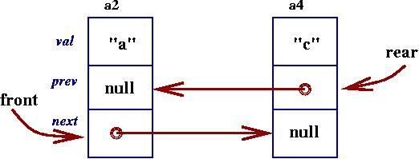

(Note: top marks the ``front'' of the list, which is also the ``top'' of the stack.)
But say that we wish to perform other manipulations of the list, say, traverse and print, using a while-loop, the contents of the list from rear to front? Clearly, the linkage structure displayed above gives us no easy way to do this.
Similar issues arise with a linked-list implementation of a queue, e.g.,
Here, we can easily add cells to the rear and remove from the front. For that matter, we can add cells to the front, if we wished. But we cannot easily remove cells from the rear --- or the middle, for that matter --- and we cannot traverse the sequence of cells from rear-to-front.
When we wish to write operations like these for a linked list:
By starting at the front, we can use the ``next'' links to traverse the cells from front to rear, say, to print "a" "b" "c" in order. By using the rear variable, we can traverse cells from the list's rear, say, "c" "b" "a". Here is a coding of class DoubleCell, which we use to construct the cells that hold values, next links, and previous links:
FIGURE: cell for doubly linked lists======================================
/** DoubleCell models a cell with double links; it is used to assemble
* doubly linked list. */
public class DoubleCell
{ private Object val; // value in the cell
private DoubleCell next; // the address of the next cell in the list
private DoubleCell prev; // the address of the previous cell in the list
/** Constructor DoubleCell builds a new cell
* @param value - the value inserted in the cell
* @param prevlink - the predecessor cell to this one
* @param nextlink - the successor cell to this one */
public DoubleCell(Object value, DoubleCell prevlink, DoubleCell nextlink)
{ val = value;
prev = prevlink;
next = nextlink;
}
/** getVal returns the value held in the cell */
public Object getVal()
{ return val; }
/** getPrev returns the address of the previous cell chained to this one */
public DoubleCell getPrev()
{ return prev; }
/** getNext returns the address of the next cell chained to this one */
public DoubleCell getNext()
{ return next; }
/** setPrev resets the address of the predecessor cell to this one
* @param link - the address of the new predecessor DoubleCell */
public void setPrev(DoubleCell link)
{ prev = link; }
/** setNext resets the address of the successor cell chained to this one
* @param link - the address of the new successor DoubleCell */
public void setNext(DoubleCell link)
{ next = link; }
}
ENDFIGURE===============================================================
The class contains methods that allow the next and previous links to
be reset; this is important for adding and removing cells in a
doubly linked list.
We can use class DoubleCell to construct various forms of doubly linked lists. As a first example, Here is a class DEQueue (a variant of a double-ended queue), which has the behavior described in the previous drawing: values can be inserted and removed from the front and the rear of the list, and the contents of the list can be printed from front-to-rear and from rear-to-front by means of while-loops:
| DEQueue |
models a double-ended queue such that
-- objects are added to the front and to the rear of the sequence; -- objects can be removed from the front and rear of the sequence; -- the sequence's contents can be displayed from front to rear and from rear to front (that is, in reverse order) |
| public void addToFront (Object ob) | adds a new object, ob, to the front of this sequence |
| public void addToRear (Object ob) | adds object, ob, to the end of this sequence |
| public Object removeFromFront () | removes the front object of this sequence and returns it |
| public Object removeFromRear () | removes the rear object of this sequence and returns it |
| public String toString () | constructs a string representation of the sequence of objects, from front to rear, and returns it |
| public String toStringReversed () | constructs a string representation of the sequence of objects, in reverse order, from rear to front, and returns it |
The coding of the DEQueue is in the Figure below. The Figure shows that care must be taken when removing a cell from the list, because both the previous and next links must be updated correctly.
FIGURE: variant of a double-ended queue============================
/** DEQueue models a double-ended queue such that
* -- objects at added to the front and to the rear of the sequence;
* -- objects can be removed from the front and rear of the sequence;
* -- the sequence's contents can be displayed from front to rear and
* from rear to front (that is, in reverse order) */
public class DEQueue
{ private DoubleCell front; // the first DoubleCell of the sequence
private DoubleCell rear; // the last DoubleCell of the sequence
// invariant: if sequence is empty,
// then front == null == rear
/** Constructor DEQueue constructs an empty sequence */
public DEQueue()
{ front = null;
rear = null;
}
/** addToFront adds a new object to the front of this sequence
* @param ob - the object added */
public void addToFront(Object ob)
{ // ``chain'' a new cell to the front:
DoubleCell new_cell = new DoubleCell(ob, null, front);
// if sequence is empty, then set front and rear to new_cell:
if ( front == null )
{ front = new_cell;
rear = new_cell;
}
else // sequence is nonempty, so add new_cell to the front:
{ front.setPrev(new_cell);
front = new_cell;
}
}
/** addToRear adds a new object to the end of this sequence
* @param ob - the object added */
public void addToRear(Object ob)
{ // ``chain'' a new cell to the rear:
DoubleCell new_cell = new DoubleCell(ob, rear, null);
// if sequence is empty, then set front and rear to new_cell:
if ( front == null )
{ front = new_cell;
rear = new_cell;
}
else // sequence is nonempty, so add new_cell to the end:
{ rear.setNext(new_cell);
rear = new_cell;
}
}
/** removeFromFront deletes the front object of this sequence
* @return the object that is removed.
* @throw RuntimeException if the sequence is empty. */
public Object removeFromFront()
{ if ( front == null )
{ throw new RuntimeException("DEQueue delete error: empty"); }
// else, sequence is nonempty:
DoubleCell answer = front;
if ( answer.getNext() != null ) // any other objects in the sequence?
{ answer.getNext().setPrev(null);
front = answer.getNext(); // reset the next object to be the front
}
else // we removed the only object:
{ rear = null;
front = null;
}
return answer.getVal();
}
/** removeFromRear deletes the rear object of this sequence
* @return the object that is removed.
* @throw RuntimeException if the sequence is empty. */
public Object removeFromRear()
{ if ( front == null )
{ throw new RuntimeException("DEQueue delete error: empty"); }
// else, sequence is nonempty:
DoubleCell answer = rear;
if ( answer.getPrev() != null ) // any othere objects in the sequence?
{ answer.getPrev().setNext(null);
rear = answer.getPrev();
}
else // we removed the only object:
{ rear = null;
front = null;
}
return answer.getVal();
}
/** toString constructs a string representation of the sequence from front
* to rear
* @return the string */
public String toString()
{ DoubleCell current = front;
String answer = "";
while ( current != null )
// invariant: so far, have included values in all cells from
// the front cell up to (but not including) the current cell
{ answer = answer + " " + current.getVal().toString();
current = current.getNext();
}
return answer;
}
/** toStringReversed constructs a string representation of the sequence
* in reverse order, from rear to front
* @return the string */
public String toStringReversed()
{ DoubleCell current = rear;
String answer = "";
while ( current != null )
// invariant: so far, have included values in all cells from
// the rear cell up to (but not including) the current cell
{ answer = answer + " " + current.getVal().toString();
current = current.getPrev();
}
return answer;
}
}
ENDFIGURE===============================================================
Here is a small example: Perhaps we construct an empty queue:
DEQueue q = new DEQueue();Heap storage looks like this:
Next, we add "b" to the front of the empty queue:
q.addToFront("b");
The coding of the addToFront method
constructs a new DoubleCell and links it to variables
front and rear:
Next, we add "c" to the rear; this resets variable rear and it also resets the next attribute of the cell that was formerly the rear:
q.addToRear("c");
Finally, when we add "a" to the front,
q.addToFront("a");
this resets both front as well as the prev link
of the formerly front cell:
If we print q, say, by
System.out.println(q.toString());We obtain "abc", because the loop inside toString traverses variable front and the next links inside the cells --- from a4 to a2 to a3.
(By the way, if object ob is a string object, then ob.toString() prints the string's value, rather than the address of the string object in storage.)
Dually,
System.out.println(q.toStringReversed());prints "cba".
Doubly linked lists are quite useful when a cell in the middle of the list must be deleted, or when cells must be inserted into the middle of the list.
The standard application is a queue for a printer, where a user can choose to delete their print job from the printer's queue; the user sends their deletion request, along with a key or ID, to the print queue, which uses the key to locate and remove the print job.
Here is an example: We want a data structure that lets us insert objects into a list, and whenever we do an insertion, we receive in return a ``key'' to where the value lives in the list. Later, we can use this ``key'' to directly delete the value from the list.
For example, perhaps we have this list,
and we are asked to delete cell, a3. To do so,
These two links are reset with these Java-like instructions:
DoubleCell delete_me = a3; delete_me.getPrev().setNext(delete_me.getNext()); // Step 1 delete_me.getNext().setPrev(delete_me.getPrev()); // Step 2
Here is a class DeleteList that implements this behavior.
FIGURE: a list that allows arbitrary deletions========================
/** DeleteList models a list that allows deletion of arbitrary elements:
* -- the insertion method adds a new object to the list, and returns
* a ``key'' to that object
* -- the deletion method uses the ``key'' to locate and delete the object
* -- the list's contents can be printed from front to rear */
public class DeleteList
{ private DoubleCell front; // the first DoubleCell of the list
private DoubleCell rear; // the last DoubleCell of the list
// invariant: if the list is empty,
// then front == null == rear
/** Constructor DeleteList constructs an empty list */
public DeleteList()
{ front = null;
rear = null;
}
/** insert adds a new object to the list
* @param ob - the object added
* @return an address which will be used as the ``key'' to the object */
public Object insert(Object ob)
{ // ``chain'' a new cell to the rear of the list:
DoubleCell new_cell = new DoubleCell(ob, rear, null);
// if list is empty, then set front and rear to new_cell:
if ( front == null )
{ front = new_cell;
rear = new_cell;
}
else // list is nonempty, so add new_cell to the end of the list:
{ rear.setNext(new_cell);
rear = new_cell;
}
return new_cell; // use the cell's address at the ``key''!
}
/** delete removes the object from the list that is identified by the
* ``key'' parameter
* @param key - the ``key'' to the object to be removed
* @throw RuntimeException if the ``key'' is invalid and matches no
* no object in the list. */
public void delete(Object key)
{ // recast the ``key'' into a Cell address:
DoubleCell delete_me = (DoubleCell)key;
// remove the deleted cell from the list by resetting its neighbors' links:
if ( delete_me.getPrev() == null ) // is deleted cell at the front?
{ front = delete_me.getNext(); }
else { delete_me.getPrev().setNext(delete_me.getNext()); }
if ( delete_me.getNext() == null ) // is deleted cell at the rear?
{ rear = delete_me.getPrev(); }
else { delete_me.getNext().setPrev(delete_me.getPrev()); }
// for safety's sake, erase all links from deleted cell:
delete_me.setPrev(null);
delete_me.setNext(null);
}
/** toString constructs a string representation of the list's contents
* @return the string */
public String toString()
{ DoubleCell current = front;
String answer = "";
while ( current != null )
// invariant: so far, have included values in all cells from
// the front cell up to (but not including) the current cell
{ answer = answer + current.getVal().toString();
current = current.getNext();
}
return answer;
}
}
ENDFIGURE===============================================================
This class's insert method uses a simple trick: after a
new cell is constructed to hold the value that is inserted, the cell's
address is returned as the ``key'' to the value in the list! To ensure
that the receiver of the ``key'' does not use the key for unauthorized
alteration of the list, the ``key'' is returned as having data type
Object, making it impossible for the receiver
to know the key's true data type and use
any methods belonging to the key.
When the ``key'' is used as a parameter in a delete request to the DeleteList, the ``key'' is recast into the address of the cell in the list that must be removed. The delete method must carefully reset the previous and next links in the cells adjacent to the deleted cell; when the deleted cell is first or last in the linked list, then either the front or rear variables are changed instead.